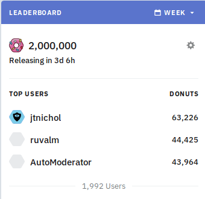
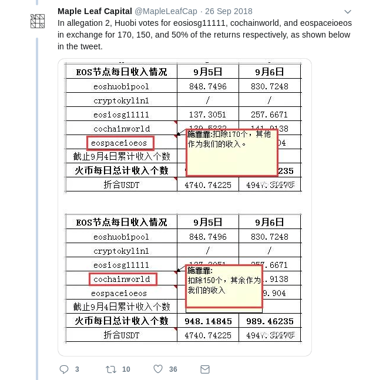
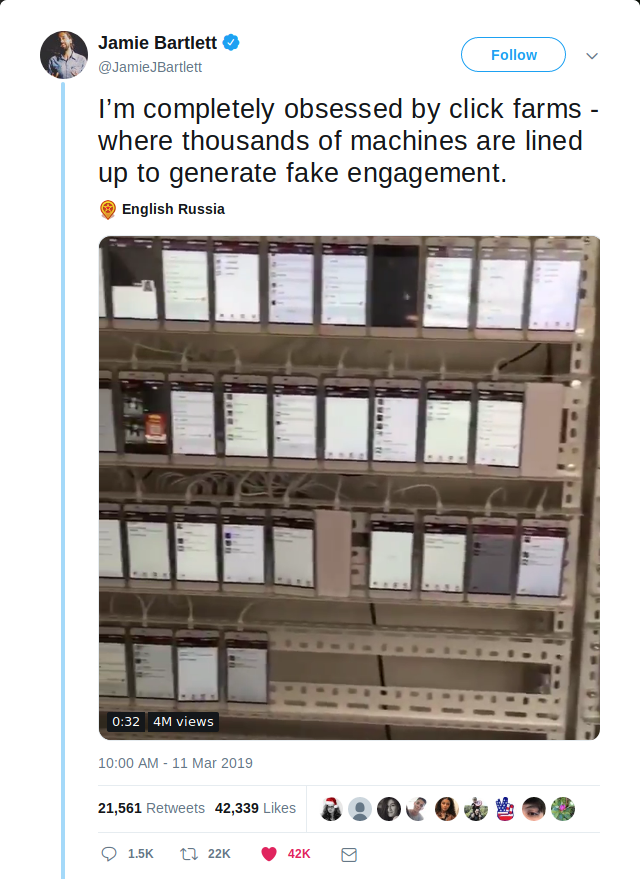
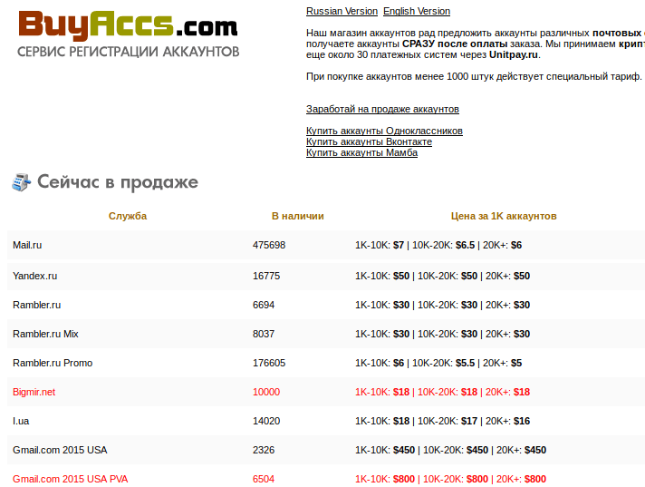
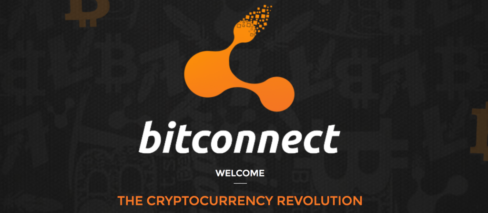
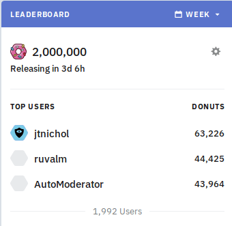
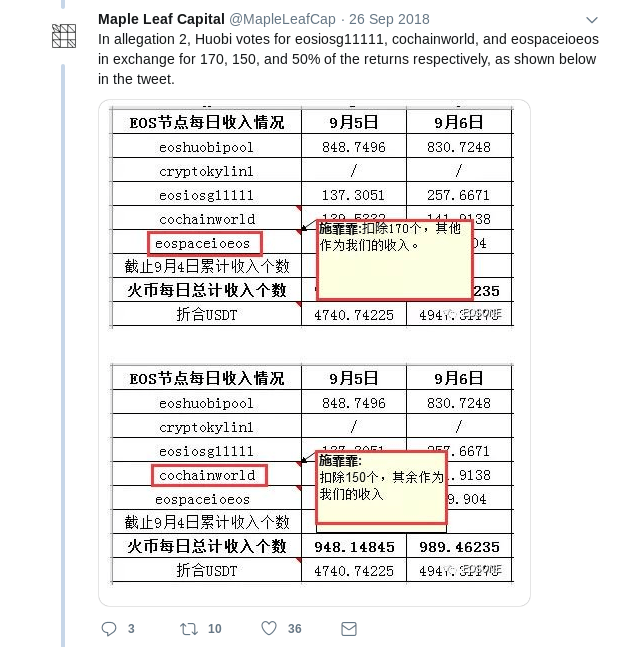
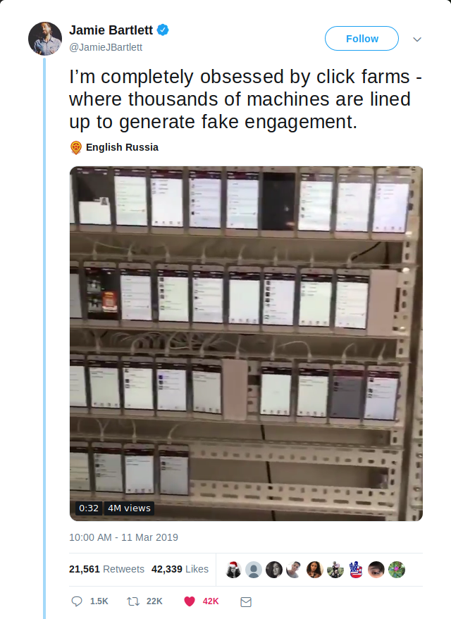
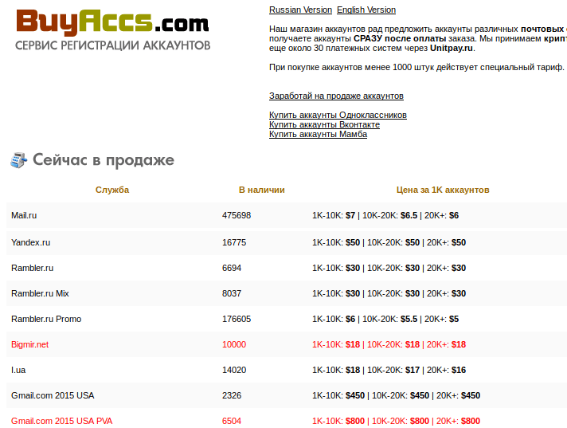
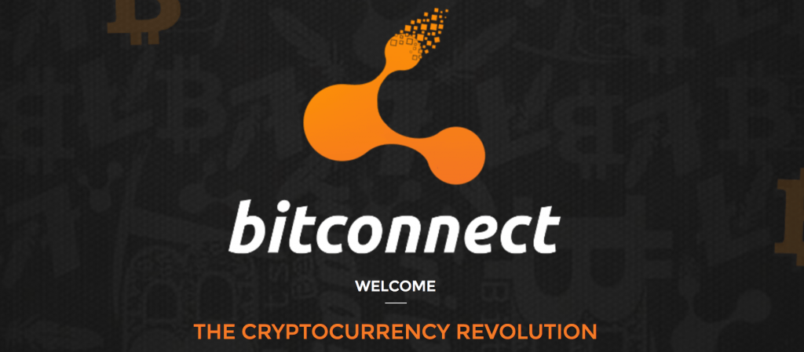

Situazioni di collusione
2000 Jan 01
See all posts
Situazioni di collusione
Un ringraziamento speciale a Glen Weyl, Phil Daian e Jinglan Wang per la revisione, e Hacktar e matteopey per la traduzione.
Negli ultimi anni si è registrato un crescente interesse nell'utilizzo di incentivi economici e meccanismi deliberatamente progettati per allineare il comportamento dei partecipanti in vari contesti. Per quanto riguarda la blockchain, la struttura del meccanismo fornisce prima di tutto la sicurezza per la blockchain stessa, incoraggia i miner o validatori proof of stake a partecipare onestamente, ma più di recente viene applicato in mercati di previsione, "registri selezionati tramite token" e molti altri contesti. Il nascente movimento RadicalXChange ha nel frattempo iniziato una sperimentazione con tasse Harberg, voto quadratico, finanziamento quadratico e altro. Recentemente si è anche registrato un crescente interesse a utilizzare incentivi basati su token per cercare di incoraggiare la diffusione di post di qualità sui social media. Tuttavia, man mano che lo sviluppo di questi sistemi passa dalla teoria alla pratica, si presenta una serie di sfide, che secondo me non sono state ancora adeguatamente considerate. Come esempio recente di questo passaggio dalla teoria alla pratica, Bihu, una piattaforma cinese, ha da poco rilasciato un meccanismo basato su moneta per incoraggiare le persone a scrivere post. Il meccanismo di base (potete consultare il white paper in cinese qui) è che se un utente della piattaforma detiene token KEY, ha la possibilità di impegnare quei token KEY in articoli; ogni utente ha a disposizione k "voti positivi" al giorno, e il "peso" di ogni voto è proporzionale alla quota dall'utente che vota. Gli articoli con una maggiore quantità di quote di voti positivi appaiono in modo più prominente e l'autore di un articolo ottiene una ricompensa di token KEY più o meno proporzionale alla quantità di voti positivi KEY assegnati all'articolo. Questa in realtà è una semplificazione eccessiva e il meccanismo attuale presenta alcune non linearità, che tuttavia non sono essenziali per il funzionamento di base del meccanismo. KEY ha valore perché può essere utilizzato in vari modi all'interno della piattaforma, ma in particolare una percentuale di tutte le entrate pubblicitarie viene utilizzata per acquistare e utilizzare KEY (meritano un grande applauso per aver ideato questo meccanismo e non aver realizzato l'ennesimo mezzo di scambio di token). Questo tipo di progetto non è sicuramente unico al mondo; incentivare la creazione di contenuti online è qualcosa di cui si occupano in molti, e ci sono stati molti progetti simili, e altri piuttosto diversi. Questa particolare piattaforma viene già utilizzata in modo significativo:

Alcuni mesi fa, il subreddit trading /r/ethtrader di Ethereum ha introdotto una funzione sperimentale per certi versi simile, in cui un token chiamato "donut" viene erogato agli utenti che fanno commenti che vengono votati positivamente, con una quantità prestabilita di donut rilasciata settimanalmente agli utenti in proporzione al numero di voti positivi ricevuti dai loro commenti. I donut possono essere utilizzati per acquistare la possibilità di impostare il contenuto del banner nella parte superiore del subreddit, nonché per votare nei sondaggi della community. Tuttavia, diversamente da ciò che accade nel sistema KEY, in questo caso la ricompensa che B riceve quando A assegna un voto positivo a B non è proporzionale alla fornitura di monete esistente di A; invece, ogni account Reddit ha la stessa capacità di contribuire ad altri account Reddit.

Questo tipo di esperimenti, che tentano di premiare la creazione di contenuti di qualità in un modo che va oltre i limiti noti di donazione/microtipping, sono molto importanti; un compenso insufficiente per la creazione di contenuti Internet generati dagli utenti è un problema molto sentito nella società in generale (provate a leggere "liberal radicalism" e "data as labor"), ed è incoraggiante vedere che le crypto community tentano di usare il potere della progettazione per cercare una soluzione. ** Ma sfortunatamente, questi sistemi sono anche vulnerabili agli attacchi. ** Autovotazione, plutocrazia e corruzione Ecco come si potrebbe attaccare economicamente il progetto proposto sopra. Supponiamo che un utente facoltoso ottenga una quantità di token N e, di conseguenza, ciascuno dei k voti positivi dell'utente dia al destinatario una ricompensa di N * q (q qui probabilmente è un numero molto piccolo, ad esempio provate a pensare q = 0,000001). L'utente semplicemente assegna voti positivi ai propri account fake, assegnandosi autonomamente una ricompensa di N * k * q. Quindi, il sistema semplicemente finisce per assegnare a ogni utente un "tasso di interesse" di k * q per periodo, e il meccanismo non ha altri scopi. Il meccanismo di Bihu, forse anticipando tutto ciò, ha una logica superlineare in cui gli articoli con più KEY con voti positivi ottengono una ricompensa sproporzionatamente maggiore, apparentemente per incoraggiare a votare positivamente per i post popolari piuttosto che votare per se stessi. È comune per i sistemi di governance con votazione a moneta aggiungere questo tipo di superlinearità per impedire che l'autovotazione metta a repentaglio l'intero sistema; la maggior parte degli schemi DPOS ha un numero limitato di slot delegati con ricompensa zero per chiunque non riceva abbastanza voti per unirsi a uno degli slot, con effetti simili. Questi sistemi, però, introducono inevitabilmente due nuovi punti deboli:
- Incoraggiano la plutocrazia, in quanto individui e cartelli molto ricchi possono comunque ottenere fondi sufficienti per autovotarsi.
- Possono essere aggirati da utenti che corrompono altri utenti per votarli in massa.
Gli attacchi di corruzione possono sembrare inverosimili (chi ha mai accettato una bustarella nella vita reale?), ma in un ecosistema maturo sono molto più realistici di quanto sembri. Nella maggior parte dei contesti in cui la corruzione ha avuto luogo nell'ambito della blockchain, gli operatori usano un nuovo eufemismo per dare al concetto un volto amichevole: non è una bustarella, è un "pool di persone" che "condivide i dividendi". Le tangenti possono anche essere mascherate: immaginate uno scambio di criptovalute che offre zero commissioni e si sforza di realizzare un'interfaccia utente eccezionalmente fruibile, e non cerca nemmeno di ottenere profitti. Utilizza invece monete che gli utenti depositano per partecipare a diversi sistemi di voto con moneta. Vi saranno inevitabilmente persone che considereranno normale la collusione all'interno dei gruppi: si veda ad esempio un recente scandalo che ha coinvolto EOS DPOS:

Infine, esiste la possibilità di una "bustarella negativa", vale a dire: ricatti o coercizioni, minacce di danneggiare i partecipanti se non agiscono all'interno del meccanismo in un determinato modo. Nell'esperimento /r/ethtrader, la paura che le persone acquistassero donut per pilotare i sondaggi di governance ha portato la community a decidere di rendere solo i donut bloccati (cioè non scambiabili) idonei per le votazioni. C'è tuttavia un attacco ancora più a basso costo dell'acquisto di donut (un attacco che può essere considerato una specie di bustarella nascosta): il noleggio. Se un hacker detiene già ETH, può utilizzarli come garanzia su una piattaforma come Compound per ottenere in prestito alcuni token, con il pieno diritto di utilizzare questi token per qualsiasi scopo, inclusa la partecipazione a voti, e al termine semplicemente rimandare i token al contratto di prestito per recuperare la garanzia. Tutto avviene senza dover sopportare nemmeno un secondo di esposizione al prezzo del token che ha appena usato per un voto decisivo con moneta, anche se il meccanismo di votazione con moneta include un blocco temporale (come ad esempio in Bihu). In ogni caso, le questioni relative a corruzione e al potere eccessivo che possono assumere partecipanti ricchi e con collegamenti importanti sono sorprendentemente difficili da evitare. Identità Alcuni sistemi tentano di mitigare gli aspetti plutocratici del voto con moneta utilizzando un sistema d'identità. Nel caso del sistema /r/ethtrader con donut, ad esempio, anche se i sondaggi di governance sono effettuati tramite un voto con moneta, il meccanismo che determina quanti donut (cioè monete) si ottengono si basa sugli account Reddit: 1 voto positivo da 1 account Reddit = N donut guadagnati. L'obiettivo ideale di un sistema di identità è rendere relativamente facile per gli individui ottenere un'identità, ma relativamente difficile ottenerne molte. Nel sistema di donut /r/ethtrader vengono utilizzati gli account Reddit, nel corrispondente CLR Gitcoin si utilizzano allo stesso scopo gli account Github. Ma l'identità, almeno nel modo in cui è stata implementata finora, è qualcosa di fragile...

Siete troppo pigri per fare incetta di telefoni? Allora forse vi serve questo:

Vale il solito avvertimento su come questi siti possano o meno essere truffaldini: fate le vostre ricerche e state attenti.
È possibile che attaccare questi meccanismi semplicemente controllando migliaia di identità false, come dei burattinai, sia persino più facile di doversi arrabattare per corrompere persone. Credete forse che la risposta sia semplicemente aumentare la sicurezza fino ad arrivare a usare documenti di identità ufficiali? Bene, se volete accaparrarvene qualcuno, potete iniziare a dare un'occhiata qui, ma tenete presente che ci sono organizzazioni criminali specializzate che sono molto più avanti di voi e, anche se tutte quelle sotterranee sono state chiuse, i governi ostili creeranno sicuramente milioni di passaporti falsi se siamo abbastanza stupidi da realizzare sistemi che rendono redditizio questo tipo di attività. E questo senza nemmeno menzionare gli attacchi nella direzione opposta, le istituzioni emittenti di identità che cercano di privare di potere le comunità marginali negando loro i documenti di identità... Collusione. Dato che così tanti meccanismi sembrano fallire allo stesso modo quando entrano in causa più identità o anche mercati liquidi, ci si potrebbe chiedere: c'è qualche elemento comune che causa tutti questi problemi? Direi che la risposta è affermativa, e l'"elemento comune" è questo: è molto più difficile, e probabilmente completamente impossibile, realizzare meccanismi che mantengano proprietà desiderabili in un modello in cui i partecipanti sono in grado di cospirare, piuttosto che in uno dove non possono farlo. La maggior parte di voi probabilmente ha già capito di cosa sto parlando; esempi specifici di questo principio sono alla base di norme consolidate, spesso leggi, che promuovono la concorrenza sul mercato e vietano cartelli che fissano i prezzi, la compravendita di voti e la corruzione. Ma il problema è molto più profondo e più generalizzato. Nella versione della teoria dei giochi che si concentra sulla scelta individuale (cioè la versione che presuppone che ogni partecipante prenda decisioni in modo indipendente e che non consenta la possibilità che gruppi di agenti agiscano come un'unica entità per il proprio vantaggio reciproco) ci sono prove matematiche che in ogni gioco deve esistere almeno un equilibrio stabile di Nash e che chi crea i meccanismi abbia un'influenza molto forte sulla "progettazione" dei giochi al fine di ottenere risultati specifici. Ma nella versione della teoria dei giochi che consente la possibilità che le coalizioni lavorino insieme, detta teoria dei giochi cooperativi, ** ci sono ** ampie classi di giochi** che non hanno esiti stabili da cui una coalizione non possa deviare in modo proficuo**. Giochi di maggioranza, formalmente descritti come giochi di N agenti in cui qualsiasi sottoinsieme di più della metà di loro può ottenere una ricompensa fissa e dividerla al proprio interno; molte situazioni di governance aziendali, di politica e altri casi che si verificano nella vita di tutti i giorni fanno parte di questo set di giochi intrinsecamente instabili. In altre parole, se esiste una situazione con un pool fisso di risorse e un meccanismo stabilito per distribuire tali risorse, ed è inevitabilmente possibile per il 51% dei partecipanti cospirare per prendere il controllo delle risorse, indipendentemente dalla situazione attuale può sempre emergere una cospirazione che risulti redditizia per i partecipanti. Tuttavia, tale cospirazione sarebbe a sua volta vulnerabile a nuove potenziali cospirazioni, ivi compresa forse una combinazione di cospiratori e vittime precedenti... e così via.
| 1 |
1/3 |
1/3 |
1/3 |
| 2 |
1/2 |
1/2 |
0 |
| 3 |
2/3 |
0 |
1/3 |
| 4 |
0 |
1/3 |
2/3 |
Questo fatto, l'instabilità dei giochi di maggioranza secondo la teoria dei giochi cooperativi, è probabilmente molto sottovalutato come modello matematico generale semplificato del perché potrebbe non esserci una "fine della storia" in politica e un sistema che si riveli pienamente soddisfacente. Personalmente credo che sia molto più utile del più famoso teorema di Arrow , per esempio. Esistono due modi per aggirare questo problema. Il primo è cercare di limitarci alla classe di giochi che siano realmente "privi di identità" e "a prova di collusione", dove non dobbiamo preoccuparci né di tangenti né di identità. Il secondo è tentare di attaccare direttamente i problemi legati all'identità e alla collusione, e risolverli abbastanza bene da poter implementare giochi non a prova di collusione, con le maggiori proprietà che questa condizione può offrire. Progettazione di giochi privi di identità e a prova di collusione La classe di giochi privi di identità e a prova di collusione è considerevole. Anche il proof of work è a prova di collusione fino al limite di un singolo attore con ~23,21% degli hash totali, e questo limite può essere aumentato fino al 50% con una
progettazione intelligente</1 >. I mercati competitivi sono ragionevolmente a prova di collusione fino a un limite relativamente alto, che è facilmente raggiungibile in alcuni casi, ma non in altri. Nel caso della
governance e della
selezione di contenuti (i quali sono entrambi solo casi speciali del problema generale, dato dalla capacità di identificare buoni e cattivi), un'importante classe di meccanismi che funziona bene è la
futarchia, in genere definita come "governance in base al mercato della previsione", sebbene direi che anche l'uso di depositi cauzionali si situi fondamentalmente nella stessa classe di tecniche. Il modo in cui i meccanismi di futarchia, nella loro forma più generale, lavorano è dato dal fatto che rendono il "votare" non solo un'espressione di opinione, ma anche una
previsione, con una ricompensa per le previsioni che si rivelano vere e una sanzione per quelle che si rivelano sbagliate. Ad esempio,
la mia proposta di "mercati previsionali per il DAO di selezione di contenuti" suggerisce una progettazione semi-centralizzata, dove chiunque può votare positivamente o negativamente i contenuti inviati, dove i contenuti con più voti positivi sono più visibili, e dove è presente anche un "comitato moderatore" che prende le decisioni finali. Per ogni post, c'è una piccola probabilità (proporzionale al volume totale di voti positivi e negativi a quel post) che il comitato moderatore sia chiamato a prendere una decisione definitiva sul post. Se il comitato moderatore approva un post, tutti coloro che lo hanno votato positivamente sono ricompensati, mentre chi ha votato negativamente viene penalizzato; se il comitato moderatore disapprova un post accade il contrario. Questo meccanismo incoraggia i partecipanti a dare voti positivi e negativi con l'intento di "prevedere" il giudizio del comitato moderatore. Un altro possibile esempio di futarchia è un sistema di governance per un progetto con un token, dove chi vota a favore di una decisione sia obbligato ad acquistare una certa quantità di token al prezzo fissato al momento dell'inizio della votazione se il voto risulta vincente; questo fa sì che un voto per una decisione sbagliata sia costoso, e nel limite, se una cattiva decisione ottiene un voto, chiunque abbia approvato la decisione deve essenzialmente rilevare tutti gli altri partecipanti al progetto. Questo garantisce che un singolo voto per una decisione "sbagliata" possa essere molto costoso per chi l'ha espresso, precludendo la possibilità di attacchi di corruzione a basso costo.

- Una descrizione grafica di una forma di futarchia, dove vengono creati due mercati che rappresentano i due "possibili mondi futuri" e viene scelto quello con un prezzo più favorevole. Fonte* questo post su ethresear.ch
Tuttavia, vi è un limite a ciò che questi meccanismi possono fare. Nel caso dell'esempio di selezione dei contenuti appena descritto, non stiamo realmente risolvendo la governance, stiamo solo scalando la funzionalità di un gadget di governance che si presume sia già attendibile. Si potrebbe cercare di sostituire il comitato moderatore con un mercato di previsione sul prezzo di un token che rappresenta il diritto di acquistare spazio pubblicitario, ma nella realtà i prezzi sono un indicatore troppo forte per rendere tale processo attuabile per un numero molto limitato di decisioni di ampia portata. E spesso il valore che cerchiamo di massimizzare è esplicitamente qualcosa di diverso dal valore massimo di una moneta. Diamo un'occhiata più esplicita sul perché, in un caso più generale in cui non sia facile determinare il valore di una decisione di governance attraverso il suo impatto sul prezzo di un token, i buoni meccanismi per l'identificazione del bene e del male pubblico non possono purtroppo essere senza identità o a prova di collusione. Se si cerca di preservare la capacità di un gioco di essere privo di identità costruendo un sistema in cui le identità non contano e solo le monete contano, si verifica un compromesso impossibile tra l'incapacità di incentivare i beni pubblici legittimi e l'appoggio eccessivo della plutocrazia. L'argomentazione è la seguente. Supponiamo che un autore stia producendo un bene pubblico (ad esempio un blog con una serie di post) che fornisce valore a ogni membro di una community di 10000 persone. Supponiamo che esista un meccanismo per cui i membri della community possono intraprendere un'azione che fa sì che l'autore riceva un guadagno di $1. A meno che i membri della comunità siano estremamente altruistici, perché il meccanismo funzioni, il costo di questa azione deve essere di gran lunga inferiore a $1, altrimenti la parte del beneficio ottenuta dal membro della community che sostiene l'autore sarebbe molto inferiore al costo richiesto per sostenere l'autore, e così il sistema diventerebbe una tragedia dei luoghi comuni in cui nessuno supporta l'autore. Pertanto, deve esistere un modo per far guadagnare all'autore $1 a un costo di gran lunga inferiore a $1. Ma ora supponiamo che esista anche una community fasulla, composta da 10000 account fake di un solo facoltoso hacker. Questa community svolge esattamente le stesse azioni di quella reale, ma anziché sostenere l'autore, sostiene un altro account fake, anch'esso di proprietà dell'hacker. Se fosse possibile per un membro della "vera community" dare all'autore $1 a un costo personale molto inferiore a $1, sarebbe possibile anche per l'hacker dare a se stesso $1 a un costo molto inferiore a $1 per tutte le volte che desidera, finendo per esaurire i fondi del sistema. Qualsiasi meccanismo che possa aiutare parti veramente poco coordinate a coordinarsi senza le giuste tutele aiuterà anche le parti già coordinate (ad esempio molti account controllati dalla stessa persona) a coordinarsi ancora di più, sottraendo denaro al sistema. La problematica è analoga quando l'obiettivo non è finanziare, ma stabilire quale contenuto deve essere più visibile. Quale contenuto pensate possa ottenere più valore in dollari: un articolo di blog di qualità legittimamente alta utile a migliaia di persone, ma la cui utilità per ogni singolo individuo è relativamente scarsa, o questo?

O forse questo?

Chi ha seguito i recenti avvenimenti di politica "nel mondo reale" potrebbe anche segnalare un altro tipo di contenuto, che va a vantaggio di attori altamente centralizzati: la manipolazione dei social media da parte di governi ostili. In ultima analisi, sia i sistemi centralizzati che quelli decentrati si trovano ad affrontare lo stesso problema di fondo, cioè che il "mercato delle idee" (e dei beni pubblici più in generale) è molto lontano dall'essere un "mercato efficiente" con il significato normalmente attribuito al termine dagli economisti, e questo porta sia a una produzione limitata di beni pubblici anche in "tempo di pace", che alla vulnerabilità ad attacchi attivi. È veramente un problema grave. È anche il motivo per cui sistemi di voto basati su moneta (come Bihu) hanno un grande vantaggio rispetto ai sistemi basati sull'identità (come Gitcoin CLR o l'esperimento con donut di /r/ethtrader): almeno non c'è interesse ad acquistare account in massa perché tutto quello che si fa è proporzionale al numero di monete che si possiede, a prescindere dal numero di account sui quali queste sono suddivise. Tuttavia, meccanismi che non si basino su alcun modello di identità e che si affidino esclusivamente alle monete non possono risolvere il problema degli interessi concentrati che surclassano le piccole community che cercano di sostenere i beni pubblici; un meccanismo privo di identità che dà poteri alle comunità distribuite non può evitare di assegnare potere eccessivo ai plutocrati centralizzati che si fingono comunità distribuite. I beni pubblici però non sono solo vulnerabili ai problemi di identità, ma anche alla corruzione. Per capire perché, considerate nuovamente l'esempio qui sopra, dove invece della "community fasulla" con 10001 account fake dell'hacker, l'aggressore ha solo un'identità, l'account che riceve finanziamenti, e gli altri 10000 account sono utenti reali, ma utenti che ricevono una tangente di $0,1 ciascuno per eseguire l'azione che farebbe guadagnare all'hacker un ulteriore $1. Come già accennato, queste tangenti possono essere incredibilmente nascoste, anche attraverso servizi di custodia di terzi che votano per conto di un utente in cambio di convenienza; nel caso di strutture con "voto tramite moneta" è ancora più facile nascondere le tangenti: si possono noleggiare monete sul mercato e utilizzarle per partecipare al voto. Così, mentre alcuni tipi di giochi, in particolare il mercato delle previsioni o i giochi basati su deposito cauzionale, possono essere realizzati a prova di collusione e privi di identità, Il finanziamento generalizzato di beni pubblici sembra essere una categoria di problema in cui purtroppo non è possibile adottare approcci a prova di collusione e privi di identità. Resistenza alla collusione e identità L'alternativa consiste nel prendere il problema di petto. Come già detto, passare semplicemente a sistemi di identità centralizzati di sicurezza superiore, come passaporti e altri documenti di identità ufficiali, non funzionerà su larga scala; in un contesto sufficientemente incentivato sono molto insicuri e vulnerabili agli stessi governi che li emettono. In realtà, il tipo di "identità" di cui parliamo qui è una sorta di gruppo di attestazioni, robusto e a più fattori, il cui scopo è dimostrare che un attore identificato da un gruppo di messaggi è effettivamente una persona unica. Un proto-modello molto precoce di questo tipo di identità in rete è discutibilmente il recupero sociale di chiavi nei telefoni blockchain di HTC:

L'idea di base è che la vostra chiave privata sia suddivisa in segreto tra un massimo di cinque contatti affidabili, in modo tale da garantire in modo matematico che tre di loro siano in grado di recuperare la chiave originale, ma almeno due non possano. Si tratta di un "sistema di identità": sono i vostri cinque amici che determineranno se chi sta cercando di recuperare il vostro account siete proprio voi. Si tratta però di un sistema di identità a scopi speciali, che cerca di risolvere un problema (la sicurezza degli account personali) diverso (e più semplice) dal tentativo di identificare esseri umani unici. Detto questo, il modello generale che prevede individui che fanno dichiarazioni su altri individui può essere ampliato in una sorta di modello di identità più robusto. Questi sistemi potrebbero essere aumentati, se si desidera, utilizzando il meccanismo di "futarchia" descritto in precedenza: se qualcuno afferma che un altro è un essere umano unico, qualcun altro non è d'accordo ed entrambe le parti sono disposte a impegnarsi per dirimere la controversia, il sistema può convocare una commissione di giudici che decida chi ha ragione. Ma vogliamo anche un'altra condizione di fondamentale importanza: vogliamo un'identità che non si possa credibilmente noleggiare o vendere. Ovviamente, non possiamo impedire alle persone di fare un accordo "tu mi invii $50", io ti mando la mia chiave", ma quello che possiamo cercare di fare è evitare che tali accordi siano credibili, in modo che il venditore non possa ingannare facilmente l'acquirente e inviargli una chiave che non funziona. Un modo per raggiungere questo risultato è creare un meccanismo con il quale il proprietario possa inviare una transazione che revochi la chiave e la sostituisca con un'altra chiave di sua scelta, in un modo che non possa essere dimostrato. Forse il modo più semplice per raggiungere l'obiettivo è usare una parte fidata che esegua il calcolo e pubblichi solo i risultati (insieme a prove di conoscenza zero che dimostrino i risultati, così la parte fidata è affidabile solo per la privacy, non per l'integrità) o decentralizzare la stessa funzionalità attraverso un calcolo a più parti. Questo tipo di approccio non risolverà completamente il problema della collusione (un gruppo di amici potrebbe ancora riunirsi e coordinare i voti) ma lo ridurrà almeno in misura gestibile per non portare al completo fallimento di questi sistemi. C'è anche un altro problema: la distribuzione iniziale della chiave. Cosa succede se un utente crea la propria identità all'interno di un servizio di custodia di terzi che poi archivia la chiave privata e la usa per votare in modo clandestino? Si tratterebbe di corruzione implicita, il potere di voto dell'utente in cambio di un servizio comodo per l'utente, e per di più, se il sistema è sicuro in quanto riesce ad evitare la corruzione rendendo i voti non provabili, anche il voto clandestino da parte di host terzi non sarebbe rilevabile. L'unico approccio per aggirare il problema sembrerebbe essere.... la verifica di persona. Ad esempio, si potrebbe creare un ecosistema di"emittenti" in cui ogni emittente rilasci smart card con chiavi private, che l'utente può scaricare immediatamente sul proprio smartphone; l'utente potrebbe poi inviare un messaggio per sostituire la chiave con una diversa che non rivelerà a nessuno. Questi emittenti potrebbero essere conoscenti o potenzialmente individui già considerati affidabili tramite determinati meccanismi di voto. Realizzare l'infrastruttura per rendere possibili meccanismi a prova di collusione, che includano solidi sistemi di identità decentrati, è una sfida difficile, ma se vogliamo sbloccare il potenziale di tali meccanismi, sembra inevitabile che dobbiamo fare del nostro meglio per provare. È vero che l'attuale dogma della sicurezza informatica, ad esempio per introdurre il voto online, è semplicemente "non si fa", ma se vogliamo espandere il ruolo dei meccanismi di voto, comprese forme più avanzate come il voto quadratico e la finanza quadratica, ad un maggior numero di ruoli, non abbiamo altra scelta se non affrontare di petto la sfida, tentare e ritentare, sperando di riuscire a realizzare qualcosa di abbastanza sicuro, almeno per alcuni casi di utilizzo.
Situazioni di collusione
2000 Jan 01 See all postsUn ringraziamento speciale a Glen Weyl, Phil Daian e Jinglan Wang per la revisione, e Hacktar e matteopey per la traduzione.
Negli ultimi anni si è registrato un crescente interesse nell'utilizzo di incentivi economici e meccanismi deliberatamente progettati per allineare il comportamento dei partecipanti in vari contesti. Per quanto riguarda la blockchain, la struttura del meccanismo fornisce prima di tutto la sicurezza per la blockchain stessa, incoraggia i miner o validatori proof of stake a partecipare onestamente, ma più di recente viene applicato in mercati di previsione, "registri selezionati tramite token" e molti altri contesti. Il nascente movimento RadicalXChange ha nel frattempo iniziato una sperimentazione con tasse Harberg, voto quadratico, finanziamento quadratico e altro. Recentemente si è anche registrato un crescente interesse a utilizzare incentivi basati su token per cercare di incoraggiare la diffusione di post di qualità sui social media. Tuttavia, man mano che lo sviluppo di questi sistemi passa dalla teoria alla pratica, si presenta una serie di sfide, che secondo me non sono state ancora adeguatamente considerate. Come esempio recente di questo passaggio dalla teoria alla pratica, Bihu, una piattaforma cinese, ha da poco rilasciato un meccanismo basato su moneta per incoraggiare le persone a scrivere post. Il meccanismo di base (potete consultare il white paper in cinese qui) è che se un utente della piattaforma detiene token KEY, ha la possibilità di impegnare quei token KEY in articoli; ogni utente ha a disposizione
k"voti positivi" al giorno, e il "peso" di ogni voto è proporzionale alla quota dall'utente che vota. Gli articoli con una maggiore quantità di quote di voti positivi appaiono in modo più prominente e l'autore di un articolo ottiene una ricompensa di token KEY più o meno proporzionale alla quantità di voti positivi KEY assegnati all'articolo. Questa in realtà è una semplificazione eccessiva e il meccanismo attuale presenta alcune non linearità, che tuttavia non sono essenziali per il funzionamento di base del meccanismo. KEY ha valore perché può essere utilizzato in vari modi all'interno della piattaforma, ma in particolare una percentuale di tutte le entrate pubblicitarie viene utilizzata per acquistare e utilizzare KEY (meritano un grande applauso per aver ideato questo meccanismo e non aver realizzato l'ennesimo mezzo di scambio di token). Questo tipo di progetto non è sicuramente unico al mondo; incentivare la creazione di contenuti online è qualcosa di cui si occupano in molti, e ci sono stati molti progetti simili, e altri piuttosto diversi. Questa particolare piattaforma viene già utilizzata in modo significativo:Alcuni mesi fa, il subreddit trading /r/ethtrader di Ethereum ha introdotto una funzione sperimentale per certi versi simile, in cui un token chiamato "donut" viene erogato agli utenti che fanno commenti che vengono votati positivamente, con una quantità prestabilita di donut rilasciata settimanalmente agli utenti in proporzione al numero di voti positivi ricevuti dai loro commenti. I donut possono essere utilizzati per acquistare la possibilità di impostare il contenuto del banner nella parte superiore del subreddit, nonché per votare nei sondaggi della community. Tuttavia, diversamente da ciò che accade nel sistema KEY, in questo caso la ricompensa che B riceve quando A assegna un voto positivo a B non è proporzionale alla fornitura di monete esistente di A; invece, ogni account Reddit ha la stessa capacità di contribuire ad altri account Reddit.

Questo tipo di esperimenti, che tentano di premiare la creazione di contenuti di qualità in un modo che va oltre i limiti noti di donazione/microtipping, sono molto importanti; un compenso insufficiente per la creazione di contenuti Internet generati dagli utenti è un problema molto sentito nella società in generale (provate a leggere "liberal radicalism" e "data as labor"), ed è incoraggiante vedere che le crypto community tentano di usare il potere della progettazione per cercare una soluzione. ** Ma sfortunatamente, questi sistemi sono anche vulnerabili agli attacchi. ** Autovotazione, plutocrazia e corruzione Ecco come si potrebbe attaccare economicamente il progetto proposto sopra. Supponiamo che un utente facoltoso ottenga una quantità di token
Ne, di conseguenza, ciascuno deikvoti positivi dell'utente dia al destinatario una ricompensa diN * q(qqui probabilmente è un numero molto piccolo, ad esempio provate a pensareq = 0,000001). L'utente semplicemente assegna voti positivi ai propri account fake, assegnandosi autonomamente una ricompensa diN * k * q. Quindi, il sistema semplicemente finisce per assegnare a ogni utente un "tasso di interesse" dik * qper periodo, e il meccanismo non ha altri scopi. Il meccanismo di Bihu, forse anticipando tutto ciò, ha una logica superlineare in cui gli articoli con più KEY con voti positivi ottengono una ricompensa sproporzionatamente maggiore, apparentemente per incoraggiare a votare positivamente per i post popolari piuttosto che votare per se stessi. È comune per i sistemi di governance con votazione a moneta aggiungere questo tipo di superlinearità per impedire che l'autovotazione metta a repentaglio l'intero sistema; la maggior parte degli schemi DPOS ha un numero limitato di slot delegati con ricompensa zero per chiunque non riceva abbastanza voti per unirsi a uno degli slot, con effetti simili. Questi sistemi, però, introducono inevitabilmente due nuovi punti deboli:Gli attacchi di corruzione possono sembrare inverosimili (chi ha mai accettato una bustarella nella vita reale?), ma in un ecosistema maturo sono molto più realistici di quanto sembri. Nella maggior parte dei contesti in cui la corruzione ha avuto luogo nell'ambito della blockchain, gli operatori usano un nuovo eufemismo per dare al concetto un volto amichevole: non è una bustarella, è un "pool di persone" che "condivide i dividendi". Le tangenti possono anche essere mascherate: immaginate uno scambio di criptovalute che offre zero commissioni e si sforza di realizzare un'interfaccia utente eccezionalmente fruibile, e non cerca nemmeno di ottenere profitti. Utilizza invece monete che gli utenti depositano per partecipare a diversi sistemi di voto con moneta. Vi saranno inevitabilmente persone che considereranno normale la collusione all'interno dei gruppi: si veda ad esempio un recente scandalo che ha coinvolto EOS DPOS:

Infine, esiste la possibilità di una "bustarella negativa", vale a dire: ricatti o coercizioni, minacce di danneggiare i partecipanti se non agiscono all'interno del meccanismo in un determinato modo. Nell'esperimento /r/ethtrader, la paura che le persone acquistassero donut per pilotare i sondaggi di governance ha portato la community a decidere di rendere solo i donut bloccati (cioè non scambiabili) idonei per le votazioni. C'è tuttavia un attacco ancora più a basso costo dell'acquisto di donut (un attacco che può essere considerato una specie di bustarella nascosta): il noleggio. Se un hacker detiene già ETH, può utilizzarli come garanzia su una piattaforma come Compound per ottenere in prestito alcuni token, con il pieno diritto di utilizzare questi token per qualsiasi scopo, inclusa la partecipazione a voti, e al termine semplicemente rimandare i token al contratto di prestito per recuperare la garanzia. Tutto avviene senza dover sopportare nemmeno un secondo di esposizione al prezzo del token che ha appena usato per un voto decisivo con moneta, anche se il meccanismo di votazione con moneta include un blocco temporale (come ad esempio in Bihu). In ogni caso, le questioni relative a corruzione e al potere eccessivo che possono assumere partecipanti ricchi e con collegamenti importanti sono sorprendentemente difficili da evitare. Identità Alcuni sistemi tentano di mitigare gli aspetti plutocratici del voto con moneta utilizzando un sistema d'identità. Nel caso del sistema /r/ethtrader con donut, ad esempio, anche se i sondaggi di governance sono effettuati tramite un voto con moneta, il meccanismo che determina quanti donut (cioè monete) si ottengono si basa sugli account Reddit: 1 voto positivo da 1 account Reddit = N donut guadagnati. L'obiettivo ideale di un sistema di identità è rendere relativamente facile per gli individui ottenere un'identità, ma relativamente difficile ottenerne molte. Nel sistema di donut /r/ethtrader vengono utilizzati gli account Reddit, nel corrispondente CLR Gitcoin si utilizzano allo stesso scopo gli account Github. Ma l'identità, almeno nel modo in cui è stata implementata finora, è qualcosa di fragile...

Siete troppo pigri per fare incetta di telefoni? Allora forse vi serve questo:

Vale il solito avvertimento su come questi siti possano o meno essere truffaldini: fate le vostre ricerche e state attenti.
È possibile che attaccare questi meccanismi semplicemente controllando migliaia di identità false, come dei burattinai, sia persino più facile di doversi arrabattare per corrompere persone. Credete forse che la risposta sia semplicemente aumentare la sicurezza fino ad arrivare a usare documenti di identità ufficiali? Bene, se volete accaparrarvene qualcuno, potete iniziare a dare un'occhiata qui, ma tenete presente che ci sono organizzazioni criminali specializzate che sono molto più avanti di voi e, anche se tutte quelle sotterranee sono state chiuse, i governi ostili creeranno sicuramente milioni di passaporti falsi se siamo abbastanza stupidi da realizzare sistemi che rendono redditizio questo tipo di attività. E questo senza nemmeno menzionare gli attacchi nella direzione opposta, le istituzioni emittenti di identità che cercano di privare di potere le comunità marginali negando loro i documenti di identità... Collusione. Dato che così tanti meccanismi sembrano fallire allo stesso modo quando entrano in causa più identità o anche mercati liquidi, ci si potrebbe chiedere: c'è qualche elemento comune che causa tutti questi problemi? Direi che la risposta è affermativa, e l'"elemento comune" è questo: è molto più difficile, e probabilmente completamente impossibile, realizzare meccanismi che mantengano proprietà desiderabili in un modello in cui i partecipanti sono in grado di cospirare, piuttosto che in uno dove non possono farlo. La maggior parte di voi probabilmente ha già capito di cosa sto parlando; esempi specifici di questo principio sono alla base di norme consolidate, spesso leggi, che promuovono la concorrenza sul mercato e vietano cartelli che fissano i prezzi, la compravendita di voti e la corruzione. Ma il problema è molto più profondo e più generalizzato. Nella versione della teoria dei giochi che si concentra sulla scelta individuale (cioè la versione che presuppone che ogni partecipante prenda decisioni in modo indipendente e che non consenta la possibilità che gruppi di agenti agiscano come un'unica entità per il proprio vantaggio reciproco) ci sono prove matematiche che in ogni gioco deve esistere almeno un equilibrio stabile di Nash e che chi crea i meccanismi abbia un'influenza molto forte sulla "progettazione" dei giochi al fine di ottenere risultati specifici. Ma nella versione della teoria dei giochi che consente la possibilità che le coalizioni lavorino insieme, detta teoria dei giochi cooperativi, ** ci sono ** ampie classi di giochi** che non hanno esiti stabili da cui una coalizione non possa deviare in modo proficuo**. Giochi di maggioranza, formalmente descritti come giochi di
Nagenti in cui qualsiasi sottoinsieme di più della metà di loro può ottenere una ricompensa fissa e dividerla al proprio interno; molte situazioni di governance aziendali, di politica e altri casi che si verificano nella vita di tutti i giorni fanno parte di questo set di giochi intrinsecamente instabili. In altre parole, se esiste una situazione con un pool fisso di risorse e un meccanismo stabilito per distribuire tali risorse, ed è inevitabilmente possibile per il 51% dei partecipanti cospirare per prendere il controllo delle risorse, indipendentemente dalla situazione attuale può sempre emergere una cospirazione che risulti redditizia per i partecipanti. Tuttavia, tale cospirazione sarebbe a sua volta vulnerabile a nuove potenziali cospirazioni, ivi compresa forse una combinazione di cospiratori e vittime precedenti... e così via.Questo fatto, l'instabilità dei giochi di maggioranza secondo la teoria dei giochi cooperativi, è probabilmente molto sottovalutato come modello matematico generale semplificato del perché potrebbe non esserci una "fine della storia" in politica e un sistema che si riveli pienamente soddisfacente. Personalmente credo che sia molto più utile del più famoso teorema di Arrow , per esempio. Esistono due modi per aggirare questo problema. Il primo è cercare di limitarci alla classe di giochi che siano realmente "privi di identità" e "a prova di collusione", dove non dobbiamo preoccuparci né di tangenti né di identità. Il secondo è tentare di attaccare direttamente i problemi legati all'identità e alla collusione, e risolverli abbastanza bene da poter implementare giochi non a prova di collusione, con le maggiori proprietà che questa condizione può offrire. Progettazione di giochi privi di identità e a prova di collusione La classe di giochi privi di identità e a prova di collusione è considerevole. Anche il proof of work è a prova di collusione fino al limite di un singolo attore con ~23,21% degli hash totali, e questo limite può essere aumentato fino al 50% con una
progettazione intelligente</1 >. I mercati competitivi sono ragionevolmente a prova di collusione fino a un limite relativamente alto, che è facilmente raggiungibile in alcuni casi, ma non in altri. Nel caso della governance e della selezione di contenuti (i quali sono entrambi solo casi speciali del problema generale, dato dalla capacità di identificare buoni e cattivi), un'importante classe di meccanismi che funziona bene è la futarchia, in genere definita come "governance in base al mercato della previsione", sebbene direi che anche l'uso di depositi cauzionali si situi fondamentalmente nella stessa classe di tecniche. Il modo in cui i meccanismi di futarchia, nella loro forma più generale, lavorano è dato dal fatto che rendono il "votare" non solo un'espressione di opinione, ma anche una previsione, con una ricompensa per le previsioni che si rivelano vere e una sanzione per quelle che si rivelano sbagliate. Ad esempio, la mia proposta di "mercati previsionali per il DAO di selezione di contenuti" suggerisce una progettazione semi-centralizzata, dove chiunque può votare positivamente o negativamente i contenuti inviati, dove i contenuti con più voti positivi sono più visibili, e dove è presente anche un "comitato moderatore" che prende le decisioni finali. Per ogni post, c'è una piccola probabilità (proporzionale al volume totale di voti positivi e negativi a quel post) che il comitato moderatore sia chiamato a prendere una decisione definitiva sul post. Se il comitato moderatore approva un post, tutti coloro che lo hanno votato positivamente sono ricompensati, mentre chi ha votato negativamente viene penalizzato; se il comitato moderatore disapprova un post accade il contrario. Questo meccanismo incoraggia i partecipanti a dare voti positivi e negativi con l'intento di "prevedere" il giudizio del comitato moderatore. Un altro possibile esempio di futarchia è un sistema di governance per un progetto con un token, dove chi vota a favore di una decisione sia obbligato ad acquistare una certa quantità di token al prezzo fissato al momento dell'inizio della votazione se il voto risulta vincente; questo fa sì che un voto per una decisione sbagliata sia costoso, e nel limite, se una cattiva decisione ottiene un voto, chiunque abbia approvato la decisione deve essenzialmente rilevare tutti gli altri partecipanti al progetto. Questo garantisce che un singolo voto per una decisione "sbagliata" possa essere molto costoso per chi l'ha espresso, precludendo la possibilità di attacchi di corruzione a basso costo.Tuttavia, vi è un limite a ciò che questi meccanismi possono fare. Nel caso dell'esempio di selezione dei contenuti appena descritto, non stiamo realmente risolvendo la governance, stiamo solo scalando la funzionalità di un gadget di governance che si presume sia già attendibile. Si potrebbe cercare di sostituire il comitato moderatore con un mercato di previsione sul prezzo di un token che rappresenta il diritto di acquistare spazio pubblicitario, ma nella realtà i prezzi sono un indicatore troppo forte per rendere tale processo attuabile per un numero molto limitato di decisioni di ampia portata. E spesso il valore che cerchiamo di massimizzare è esplicitamente qualcosa di diverso dal valore massimo di una moneta. Diamo un'occhiata più esplicita sul perché, in un caso più generale in cui non sia facile determinare il valore di una decisione di governance attraverso il suo impatto sul prezzo di un token, i buoni meccanismi per l'identificazione del bene e del male pubblico non possono purtroppo essere senza identità o a prova di collusione. Se si cerca di preservare la capacità di un gioco di essere privo di identità costruendo un sistema in cui le identità non contano e solo le monete contano, si verifica un compromesso impossibile tra l'incapacità di incentivare i beni pubblici legittimi e l'appoggio eccessivo della plutocrazia. L'argomentazione è la seguente. Supponiamo che un autore stia producendo un bene pubblico (ad esempio un blog con una serie di post) che fornisce valore a ogni membro di una community di 10000 persone. Supponiamo che esista un meccanismo per cui i membri della community possono intraprendere un'azione che fa sì che l'autore riceva un guadagno di $1. A meno che i membri della comunità siano estremamente altruistici, perché il meccanismo funzioni, il costo di questa azione deve essere di gran lunga inferiore a $1, altrimenti la parte del beneficio ottenuta dal membro della community che sostiene l'autore sarebbe molto inferiore al costo richiesto per sostenere l'autore, e così il sistema diventerebbe una tragedia dei luoghi comuni in cui nessuno supporta l'autore. Pertanto, deve esistere un modo per far guadagnare all'autore $1 a un costo di gran lunga inferiore a $1. Ma ora supponiamo che esista anche una community fasulla, composta da 10000 account fake di un solo facoltoso hacker. Questa community svolge esattamente le stesse azioni di quella reale, ma anziché sostenere l'autore, sostiene un altro account fake, anch'esso di proprietà dell'hacker. Se fosse possibile per un membro della "vera community" dare all'autore $1 a un costo personale molto inferiore a $1, sarebbe possibile anche per l'hacker dare a se stesso $1 a un costo molto inferiore a $1 per tutte le volte che desidera, finendo per esaurire i fondi del sistema. Qualsiasi meccanismo che possa aiutare parti veramente poco coordinate a coordinarsi senza le giuste tutele aiuterà anche le parti già coordinate (ad esempio molti account controllati dalla stessa persona) a coordinarsi ancora di più, sottraendo denaro al sistema. La problematica è analoga quando l'obiettivo non è finanziare, ma stabilire quale contenuto deve essere più visibile. Quale contenuto pensate possa ottenere più valore in dollari: un articolo di blog di qualità legittimamente alta utile a migliaia di persone, ma la cui utilità per ogni singolo individuo è relativamente scarsa, o questo?
O forse questo?

Chi ha seguito i recenti avvenimenti di politica "nel mondo reale" potrebbe anche segnalare un altro tipo di contenuto, che va a vantaggio di attori altamente centralizzati: la manipolazione dei social media da parte di governi ostili. In ultima analisi, sia i sistemi centralizzati che quelli decentrati si trovano ad affrontare lo stesso problema di fondo, cioè che il "mercato delle idee" (e dei beni pubblici più in generale) è molto lontano dall'essere un "mercato efficiente" con il significato normalmente attribuito al termine dagli economisti, e questo porta sia a una produzione limitata di beni pubblici anche in "tempo di pace", che alla vulnerabilità ad attacchi attivi. È veramente un problema grave. È anche il motivo per cui sistemi di voto basati su moneta (come Bihu) hanno un grande vantaggio rispetto ai sistemi basati sull'identità (come Gitcoin CLR o l'esperimento con donut di /r/ethtrader): almeno non c'è interesse ad acquistare account in massa perché tutto quello che si fa è proporzionale al numero di monete che si possiede, a prescindere dal numero di account sui quali queste sono suddivise. Tuttavia, meccanismi che non si basino su alcun modello di identità e che si affidino esclusivamente alle monete non possono risolvere il problema degli interessi concentrati che surclassano le piccole community che cercano di sostenere i beni pubblici; un meccanismo privo di identità che dà poteri alle comunità distribuite non può evitare di assegnare potere eccessivo ai plutocrati centralizzati che si fingono comunità distribuite. I beni pubblici però non sono solo vulnerabili ai problemi di identità, ma anche alla corruzione. Per capire perché, considerate nuovamente l'esempio qui sopra, dove invece della "community fasulla" con 10001 account fake dell'hacker, l'aggressore ha solo un'identità, l'account che riceve finanziamenti, e gli altri 10000 account sono utenti reali, ma utenti che ricevono una tangente di $0,1 ciascuno per eseguire l'azione che farebbe guadagnare all'hacker un ulteriore $1. Come già accennato, queste tangenti possono essere incredibilmente nascoste, anche attraverso servizi di custodia di terzi che votano per conto di un utente in cambio di convenienza; nel caso di strutture con "voto tramite moneta" è ancora più facile nascondere le tangenti: si possono noleggiare monete sul mercato e utilizzarle per partecipare al voto. Così, mentre alcuni tipi di giochi, in particolare il mercato delle previsioni o i giochi basati su deposito cauzionale, possono essere realizzati a prova di collusione e privi di identità, Il finanziamento generalizzato di beni pubblici sembra essere una categoria di problema in cui purtroppo non è possibile adottare approcci a prova di collusione e privi di identità. Resistenza alla collusione e identità L'alternativa consiste nel prendere il problema di petto. Come già detto, passare semplicemente a sistemi di identità centralizzati di sicurezza superiore, come passaporti e altri documenti di identità ufficiali, non funzionerà su larga scala; in un contesto sufficientemente incentivato sono molto insicuri e vulnerabili agli stessi governi che li emettono. In realtà, il tipo di "identità" di cui parliamo qui è una sorta di gruppo di attestazioni, robusto e a più fattori, il cui scopo è dimostrare che un attore identificato da un gruppo di messaggi è effettivamente una persona unica. Un proto-modello molto precoce di questo tipo di identità in rete è discutibilmente il recupero sociale di chiavi nei telefoni blockchain di HTC:
L'idea di base è che la vostra chiave privata sia suddivisa in segreto tra un massimo di cinque contatti affidabili, in modo tale da garantire in modo matematico che tre di loro siano in grado di recuperare la chiave originale, ma almeno due non possano. Si tratta di un "sistema di identità": sono i vostri cinque amici che determineranno se chi sta cercando di recuperare il vostro account siete proprio voi. Si tratta però di un sistema di identità a scopi speciali, che cerca di risolvere un problema (la sicurezza degli account personali) diverso (e più semplice) dal tentativo di identificare esseri umani unici. Detto questo, il modello generale che prevede individui che fanno dichiarazioni su altri individui può essere ampliato in una sorta di modello di identità più robusto. Questi sistemi potrebbero essere aumentati, se si desidera, utilizzando il meccanismo di "futarchia" descritto in precedenza: se qualcuno afferma che un altro è un essere umano unico, qualcun altro non è d'accordo ed entrambe le parti sono disposte a impegnarsi per dirimere la controversia, il sistema può convocare una commissione di giudici che decida chi ha ragione. Ma vogliamo anche un'altra condizione di fondamentale importanza: vogliamo un'identità che non si possa credibilmente noleggiare o vendere. Ovviamente, non possiamo impedire alle persone di fare un accordo "tu mi invii $50", io ti mando la mia chiave", ma quello che possiamo cercare di fare è evitare che tali accordi siano credibili, in modo che il venditore non possa ingannare facilmente l'acquirente e inviargli una chiave che non funziona. Un modo per raggiungere questo risultato è creare un meccanismo con il quale il proprietario possa inviare una transazione che revochi la chiave e la sostituisca con un'altra chiave di sua scelta, in un modo che non possa essere dimostrato. Forse il modo più semplice per raggiungere l'obiettivo è usare una parte fidata che esegua il calcolo e pubblichi solo i risultati (insieme a prove di conoscenza zero che dimostrino i risultati, così la parte fidata è affidabile solo per la privacy, non per l'integrità) o decentralizzare la stessa funzionalità attraverso un calcolo a più parti. Questo tipo di approccio non risolverà completamente il problema della collusione (un gruppo di amici potrebbe ancora riunirsi e coordinare i voti) ma lo ridurrà almeno in misura gestibile per non portare al completo fallimento di questi sistemi. C'è anche un altro problema: la distribuzione iniziale della chiave. Cosa succede se un utente crea la propria identità all'interno di un servizio di custodia di terzi che poi archivia la chiave privata e la usa per votare in modo clandestino? Si tratterebbe di corruzione implicita, il potere di voto dell'utente in cambio di un servizio comodo per l'utente, e per di più, se il sistema è sicuro in quanto riesce ad evitare la corruzione rendendo i voti non provabili, anche il voto clandestino da parte di host terzi non sarebbe rilevabile. L'unico approccio per aggirare il problema sembrerebbe essere.... la verifica di persona. Ad esempio, si potrebbe creare un ecosistema di"emittenti" in cui ogni emittente rilasci smart card con chiavi private, che l'utente può scaricare immediatamente sul proprio smartphone; l'utente potrebbe poi inviare un messaggio per sostituire la chiave con una diversa che non rivelerà a nessuno. Questi emittenti potrebbero essere conoscenti o potenzialmente individui già considerati affidabili tramite determinati meccanismi di voto. Realizzare l'infrastruttura per rendere possibili meccanismi a prova di collusione, che includano solidi sistemi di identità decentrati, è una sfida difficile, ma se vogliamo sbloccare il potenziale di tali meccanismi, sembra inevitabile che dobbiamo fare del nostro meglio per provare. È vero che l'attuale dogma della sicurezza informatica, ad esempio per introdurre il voto online, è semplicemente "non si fa", ma se vogliamo espandere il ruolo dei meccanismi di voto, comprese forme più avanzate come il voto quadratico e la finanza quadratica, ad un maggior numero di ruoli, non abbiamo altra scelta se non affrontare di petto la sfida, tentare e ritentare, sperando di riuscire a realizzare qualcosa di abbastanza sicuro, almeno per alcuni casi di utilizzo.